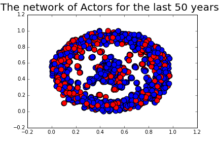

Network
In this section we will extract information from The Open Movie Database to get all the information needed to construct networks from movies released in the last 50 years. Each movie has listed 3-5 star actors that we will connect together in networkx multigraph, we will use multigraph since actors can be connected with each other not only from one movie but from multiple movies. Red nodes will contribute to female actors and blue nodes will contribute to a male actors
Actors Network
First, we'll construct a network of actors from movies released in recent 50 years, this is how the network looks like:
The ration is .. with the five highest degree of the following actors:
Now we will take a look at more recent data that may reflect more on the current status in the actor network. We will do so by constructing the network from movies released in recent 5 years (2012-2016).

What is interesting to see is that the network seems to be similar to the one above.
Directors Network
Lets switch the focus from actors to the directors. The first network will represent directors of movies released in the last 50 years. What connects the directors together is the actors the their